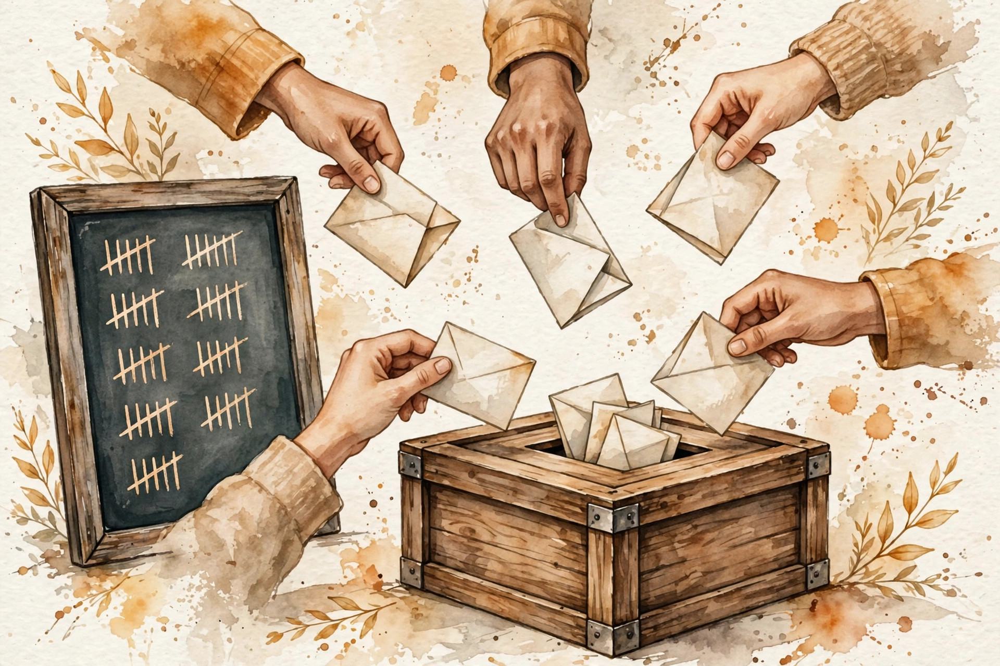

CS224N · Companion artifact U08 of 15
Change behavior cheaply: with words (prompting) or with a few parameters (PEFT). The prompt is the program, the delta is the steering wheel.
“From the lesson” marks facts from lessons/u08_prompting_peft.md. “Illustration” marks interactive toys that run the lesson’s rules over tiny inputs. “Companion” marks advice from the companion author. Tags after each section name the lesson leaf, for example C04.
Section 1 · C01
From the lessonC01 §2, §3
No gradients, no data, just a prompt. How can the model do a new task? The prompt contains the task description (zero-shot) or a few examples (few-shot), and the model continues the pattern. The prompt is the program. Pretraining taught it to continue, SFT taught it the format. No weights change. The "learning" is in the context.
From the lessonC01 §4, §5
Hand-set toy, labeled as such: sentiment with 2 shots ("great -> pos", "awful -> neg"), query "loved it", the model continues "pos". Zero-shot works when the instruction names a known pattern, few-shot works by showing the pattern. The limit: the context window bounds k, and the model never truly learns (no weight updates).
From the lessonC01 §11
The broken assumption is that few-shot teaches the task. The model mimics the examples' surface (format, label words) without the underlying rule: change the label words and performance collapses. The examples steer the model, they do not train it.
Prompting steers, it does not teach. The examples steer a frozen model. They are not training data.
Section 2 · C02
From the lessonC02 §2, §3
The weights are frozen. Where does the "learning" happen? The leading account: the forward pass implements a learning algorithm over the context (the examples are data, the attention is the update). The honest version: this is an active research question, not settled. The sketch: linear attention can implement one step of gradient descent on the context examples. The sketch motivates, not proves.
From the lessonC02 §4, §5
Hand-set toy, labeled as such: 0-shot 55 percent, 4-shot 72 percent, 16-shot 74 percent on a toy task. The curve rises then flattens: the context teaches, then the window fills. The model was meta-trained by pretraining: next-token prediction on diverse text rewards the ability to pick up patterns fast.
From the lessonC02 §11
The broken assumption is that more shots always help. The toy curve flattens. Some tasks degrade past k (distraction, wrong pattern reinforcement). Measure your curve, do not assume it.
Treat the context as a dataset and the forward pass as the learner. Then measure the learning curve like any dataset: it saturates.
Section 3 · C03
From the lessonC03 §2, §3
Which k examples? Random, or chosen? The demos are the training set you do not train on: same rules as U07 C02's instruction data, compressed into k slots. Desiderata: correct, diverse, formatted like the query, near the decision boundary. Selection: random baseline, retrieval (nearest to the query), manual curation.
From the lessonC03 §4, §5
Hand-set toy, labeled as such: random 4-shot 68 percent, retrieved 4-shot 75 percent, curated 4-shot 78 percent. Selection matters, with diminishing returns. Retrieval picks examples like the query and usually beats random.
From the lessonC03 §11
The broken assumption is that the best demos are the most similar. The nearest demos may all show one class. The set needs diversity, not just similarity. Balance classes in the k.
Section 4 · C04
From the lessonC04 §2, §3
Rephrase the prompt. Does the answer change? Prompts are brittle programs: small rephrases move accuracy by points. The model is sensitive to word choice, order, and format. From compute_u08.py: three paraphrases score 0.994, 0.919, 0.999 under a fixed toy scorer, std 0.036. The protocol: fixed task, paraphrase set, score each, report the spread.
From the lessonC04 §4, §5
Small here (toy scorer). On real models the spread is the number you report. Mitigations: average over paraphrases, tune the prompt on a dev set, or fine-tune (which bakes the behavior in).
From the lessonC04 §11
The broken assumption is that the tuned prompt generalizes. Prompts overfit the dev set like any hyperparameter. Hold out prompt-dev data, or the tuning is theater.
compute_u08.py (executed 2026-10-06): 0.994, 0.919, 0.999. Std 0.036.Sensitivity is measured, not assumed. Score paraphrases under a fixed scorer and report the spread.
Illustration The spread meter. The protocol is C04’s. The scores are yours. Prefilled with the lesson numbers.
scores (comma separated)
Section 5 · C05
From the lessonC05 §2, §3
"Think step by step" improves math scores. What changed? The format buys serial compute: n reasoning tokens = n extra forward passes to work the problem. The model generates the steps, each step conditions on the last. It also exposes the work for checking.
From the lessonC05 §4, §5
Hand-set toy, labeled as such: 2-step arithmetic, direct answer 61 percent, with steps 79 percent. The gap is the scratch paper working. Hard problems split into easy steps, and the model gets one forward pass per step.
From the lessonC05 §11
The broken assumption is that the steps show the model's reasoning. Models produce plausible steps for answers they reached otherwise (post-hoc rationalization, shown by intervention studies). Useful, not faithful.
Reasoning formats buy serial compute, not transparency. The steps are generated text, optimized to look right.
Section 6 · C06
From the lessonC06 §2, §3
One sample might be wrong. What do five say? Sample diverse reasoning paths, take the most common answer. An election: each sample is a vote, the majority wins. The math is the binomial: it helps exactly when errors are independent (different paths, different mistakes).
From the lessonC06 §4, §5
From compute_u08.py: p = 0.6, majority of 5 = 0.6826. The number is exact (binomial), not estimated. The gain shrinks as p approaches 1 (already right) and reverses below 0.5 (majority of wrong).
From the lessonC06 §11
The broken assumption is that voting always helps. At p = 0.4, majority of 5 = 0.3174, worse than one sample. Voting amplifies the majority opinion, right or wrong. Correlated errors (the model always makes the same mistake) vote the same wrong way.

compute_u08.py (executed 2026-10-06): single sample 0.6, majority of 5 0.6826.Voting amplifies the majority, right or wrong. It helps when errors are independent and p sits above one half.
Illustration The ballot box. The binomial is C06’s. The per-sample accuracy is yours. Prefilled with the lesson toy.
p (per sample)
n (votes)
Section 7 · C07
From the lessonC07 §2, §3
Full fine-tuning updates 7B params. What if the task needs 0.06 percent of that? PEFT freezes the base weights and trains a tiny add-on: adapters (C08), LoRA (C09), prefixes, prompt tuning. A small steering wheel on a big ship. The add-on steers. The ship (knowledge, fluency) stays.
From the lessonC07 §4, §5
From compute_u08.py: LoRA at r = 8 trains 4.19M params (0.060 percent of 7B), adapters 33.6M at b = 64. The shared mechanism: restrict the update to a low-dimensional subspace. Fewer params = less memory (no optimizer states for W), less overfitting, cheaper storage per task (one small delta each).
From the lessonC07 §11
The broken assumption is that PEFT matches full tuning everywhere. Pretraining-new-domain tasks (new language): the delta is not small, PEFT underfits. Match the method to the distance.
compute_u08.py (executed 2026-10-06): full 7B vs LoRA 4.19M (0.060 percent) vs adapters 33.6M. Log scale.The task-specific delta is small. Freeze the ship, train the steering wheel, store one small delta per task.
Section 8 · C08
From the lessonC08 §2, §3
Where does the small module plug in? After attention and after the FFN: x + Adapter(x), with Adapter = W_up relu(W_down x). A detour: the signal passes through a narrow corridor (down to b, back up to d) added residually. The corridor is the only trained part. Two per layer (post-attn, post-FFN) is the standard placement.
From the lessonC08 §4, §5
From compute_u08.py: bottleneck b = 64 at d = 4096. Per adapter 524288, per layer (x2) 1048576, 32 layers 3.36e7. Eight times LoRA's count at these settings. Unlike LoRA, the adapter stays in the graph at inference (extra latency: the honest cost).
From the lessonC08 §11
The broken assumption is that adapters are free at inference. The extra matmuls add latency per token per layer. At 32 layers x2 adapters it is measurable. LoRA merges, adapters do not.
Illustration The adapter counter. The bottleneck arithmetic is C08’s. The sizes are yours. Prefilled with the lesson toy.
d (model width)
b (bottleneck)
layers
Section 9 · C09
From the lessonC09 §2, §3
The weight update dW is (d, d). What if it is low-rank? dW = BA, B (d, r), A (r, d), r = 8. Train A, B, freeze W. Forward: (W + BA)x. A small rudder on a big weight: the update lives in a rank-r subspace, 2dr params instead of d². Initialize A random, B zero: the delta starts at zero (base model at step 0).
From the lessonC09 §4, §5
From compute_u08.py: per matrix 65536, ratio 256:1 vs full. 32 layers Q+V: 4.19M, 0.060% of 7B. rank(BA) is at most r. Merging: W' = W + (alpha/r) BA, computed once, then A, B are discarded for serving. At inference, add BA into W once: the deployed model is one matrix, zero extra latency.
From the lessonC09 §11
The broken assumption is that rank 8 suffices for everything. The true update on a far task is high-rank. With r = 8 it underfits. The rank is a capacity knob, tune it.
LoRA's whole trick: rank(BA) is at most r, so the update costs 2dr instead of d², and it merges into W for free serving.
Illustration The LoRA counter. The rank arithmetic is C09’s. The sizes are yours. Prefilled with the lesson toy.
d (model width)
r (rank)
layers (Q+V each)
Section 10 · C10
From the lessonC10 §2, §3
The errors.md entry (U08 T2) warns against unequal comparisons. What is the fair fight? A menu, not a ranking. Full tuning: all params, max capacity, max memory (U06: 12 GB at 1B), one model per task. PEFT: delta only, less memory, one base + many deltas, less capacity. The task's distance from base decides.
From the lessonC10 §4, §5
Hand-set comparison table, labeled as such, 7B model. Full: 7B updated, ~100+ GB training memory, 14 GB per task stored. LoRA r=8: 4.19M updated, base + delta memory, 8 MB per task stored. The rule: compare at equal data and equal tuning effort. The five axes: params updated, memory, storage per task, capacity, inference cost.
From the lessonC10 §11
The broken assumption is "PEFT won, so it is better." The comparison gave PEFT more tuning (or full tuning less data). Unequal effort is the most common fake win.
Compare at equal data and equal tuning effort. Unequal effort is the most common fake win in the PEFT literature.
Section 11 · C11
From the lessonC11 §2, §3
Fine-tune on task B. What happens to task A? New writing over old. Gradient descent on B moves the weights toward B's optimum, away from A's. The further B's optimum, the worse the forgetting. PEFT forgets less (the base is frozen). Full tuning forgets freely.
From the lessonC11 §4, §5
From compute_u08.py, a real numpy run: linear model, A: y = 2x, B: y = -x. Task A loss 0.0 before B, 10.1885 after. The weight ends at -1.000 (B's optimum). It served A at 2.0, serves B at -1.0, it cannot be both. Mitigations: replay (mix A data), freeze (PEFT), regularize toward A (EWC, the named method).
From the lessonC11 §11
The broken assumption is that a little fine-tuning will not hurt. The toy: full retraining on B erased A completely. Even "little" tuning moves the shared weights. Measure A after.
compute_u08.py (executed 2026-10-06): 0.0 to 10.1885.One weight cannot serve two opposed optima. Fine-tuning on B erases A unless you replay, freeze, or regularize.
Section 12 · C12
From the lessonC12 §2, §3
The model must emit JSON. How do you know it did? A bouncer at the door. Parse (is it JSON?), schema (does it have the fields?), semantics (are the values sane?). Each layer catches a different failure: truncation, wrong keys, right shape wrong content.
From the lessonC12 §4, §5
From compute_u08.py: 5 outputs, 2 valid JSON. Valid 2/5. The failures: truncated JSON, non-JSON, empty value. The standard loop: retry with the error message appended.
From the lessonC12 §11
The broken assumption is that valid JSON means correct output. '{"ans": 5}' parses and fits the schema but may be the wrong answer. Validation checks the shape, not the truth.
Validation makes wrong outputs visible. It does not make the model right. Layer the checks. Parse, schema, semantics, then retry with the error appended.
Illustration The JSON bouncer. The parse rule is C12’s. The outputs are yours, one per line.
Wisdom index
Each nugget states the idea in plain words, why it matters, and the transferable principle. Every one is anchored to its lesson section.